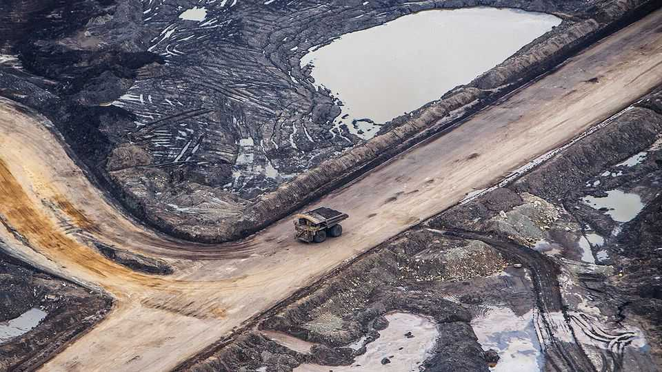

Canada’s oil industry is booming. Can it last?
Looser regulations will help with pipelines—but may not boost production

Aug 20th 2026
“Please God, give me one more oil boom—and I promise not to piss it all away next time” reads a popular bumper sticker in Canada’s oil patch. Recent results from the country’s oil producers show that plea has been answered. Oil prices have jumped as the passage of tankers through the Strait of Hormuz has been choked off. Last month Cenovus Energy reported that operating profits in its most recent quarter had nearly tripled compared with a year before. Canadian Natural Resources posted its best-ever quarterly adjusted operating profit. Moreover, the easing of political headwinds in Canada may improve the chances of the boom lasting.
Canada has the world’s fourth-largest proven reserves, with 97% found in the oil sands in a remote corner of the land-locked province of Alberta. Here the bitumen, mixed with sand and clay, is almost solid, and is mined rather than tapped from the ground. It is costly and dirty to extract and process. Despite the drawbacks, high prices combined with a weakening of the Canadian dollar mean that “it hasn’t been this good to be an oil-sands producer in a very long time,” says Andrew Leach of the University of Alberta.
Getting more oil to market is also set to become easier. Justin Trudeau, Canada’s former prime minister, was tepid in his support for new pipelines, fearing the consequences for the climate. In 2018 regional political opposition led Kinder Morgan, an American firm, to suspend work on a conduit from Alberta to the west coast in British Columbia. That forced the national government to step in and complete it. Oil eventually started flowing in 2024.
Lately the political mood has shifted. A trade war with America, the destination for 90% of Canadian oil, has shifted the federal government’s focus to reducing dependence on its southern neighbour. That includes support for building new infrastructure to transport oil (and gas) to ports on Canada’s west coast, from where it can be shipped to Asia. Mark Carney, Canada’s current prime minister, is intent on slashing the red tape that holds up projects, including streamlining environmental permitting and consultations with indigenous communities. The speedier process will apply to a new pipeline under development to British Columbia, announced last month. Lisa Baiton of the Canadian Association of Petroleum Producers, an industry group, has spoken of a “generational opportunity” to rally political and public support behind new oil projects.
The promise of a federal government more friendly to pipes may not be enough, however. Enbridge, an energy-infrastructure firm, has paused construction of a pipeline to the east, citing a lack of commitments by producers to provide enough oil to make it worthwhile.
The unique challenges of the oil sands provide an explanation. Investment in new sites has been virtually non-existent since the oil price crashed in 2014 as demand weakened while America’s shale oil gushed and opec opened the taps. “It cannot be overstated how much that changed the industry,” says Kent Fellows of the University of Calgary. Moreover, projects in the oil sands take far longer to develop than conventional wells. They require enormous amounts of capital that could be tied up for five to ten years before profits flow. Uncertainty over the future price of oil—and the danger that a change of government might lead to the reinstatement of tighter regulations—make for risky bets.
Nevertheless, at the Calgary Stampede, an annual rodeo festival held in July that serves as the industry’s unofficial barometer, parties hosted by oil companies were back to their riotous best after quietening down in recent years. Their sponsorship of rowdy chuckwagon races broke records. That is as good a sign as any that another boom is in full swing. ■